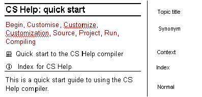

|
| |
The ease with which a specific topic can be located within help may be improved by adding synonyms or additional keywords to the topic.
The process is:
Open the rtf source file and go to the topic to which synonyms are to be added.
Create a new line before the beginning of the topic body text (Normal style).
Enter the synonyms in a comma separated list. The keywords typically include synonyms, alternative spellings and even common misspellings.
Style mark the synonym text using the Synonym style.
There is a 120 character limit for the synonym field associated with each topic. Users may specify more than this number of synonym characters, however all text after the 120th character is ignored by the CS Help compiler.
|
The rtf fragment given below is taken from epoc32ex\ToolsAndUtilities\CsHelp.rtf. It demonstrates the synonyms, context and index for the CS Help quick start topic.

Synonyms used in CsHelp.rtf
The Quick Start topic has the synonyms: Begin, Customise, Customize, Customization, Source, Project, Run, Compiling. Searches for any of these will display this topic.
Copyright ©2002 Symbian Ltd. 6.1-00174 |
|